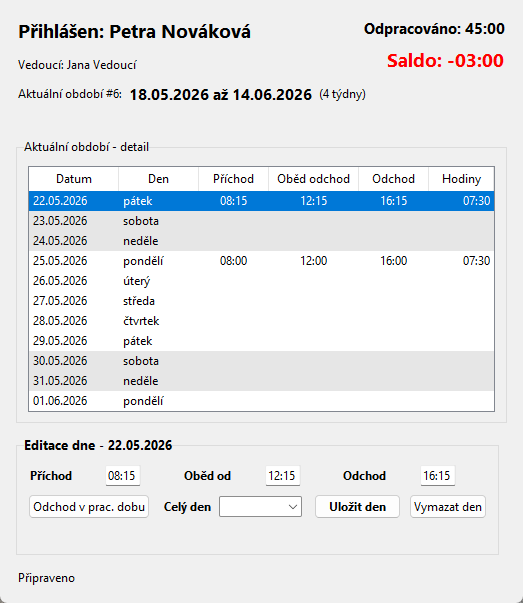

Docházka - uživatelská nápověda pro roli zaměstnanec
Projekt: Docházka | Aktualizováno: 22. 5. 2026 | Role: zaměstnanec (employee)
Co může zaměstnanec dělat
- Vidí a upravuje pouze vlastní docházku.
- Nemá menu Administrace ani Vedoucí.
- Může používat menu Zobrazit, Export a Nápověda.
- Může exportovat vlastní aktuální nebo vybrané období do XLS/XLSX.
- Ruční časy zadává ve formátu HH:MM; aplikace povoluje jen kroky po 15 minutách.
1. Hlavní okno

Screenshot 1: Hlavní okno zobrazuje aktuální čtyřtýdenní období, normu, odpracovaný čas a saldo. V tabulce jsou jednotlivé dny, víkendy jsou odlišené šedým pozadím.
Práce s tabulkou období
- Kliknutím na řádek vybereš den pro editaci ve spodním panelu.
- Dvojklikem do buněk Příchod, Oběd odchod nebo Odchod lze rychle upravit čas přímo v tabulce.
- Po uložení se přepočítá Odpracováno, Saldo i případné upozornění na nevyplněné dny.
Editace dne
- Vyplň Příchod, Oběd od a Odchod, například
08:15, 12:15, 16:15.
- Pokud vybereš Celý den, nesmí být současně vyplněné časy příchodu, oběda ani odchodu.
- Vymazat den odstraní časy, typ celého dne i odchody v pracovní době pro vybraný den.
Pevná doba: Odchod v pracovní době se neodečítá v části, která spadá do nastavené pevné doby. Část mimo pevnou dobu se odečte od odpracovaného času. Víkendové odchody se odečítají celé.
2. Odchod v pracovní době

Screenshot 2: V okně odchodů může být pro jeden den více záznamů. Každý záznam má čas Od, Do a povinný důvod.
- Časy se zadávají jako
HH:MM a musí být v 15minutovém kroku.
- Intervaly se nesmí překrývat.
- V detailu dne se zobrazuje souhrn všech zadaných odchodů.
3. Detail docházky

Screenshot 3: Okno Zobrazit - Detail docházky je čtecí přehled vybraného období. Obsahuje příchod, oběd, odchod, odchody v pracovní době a vypočtené hodiny za každý den.
- Combobox Období přepíná mezi pracovními cykly.
- Tlačítko Obnovit znovu načte data z databáze.
- Souhrn nad tabulkou ukazuje normu, odpracováno a saldo v hodinách a minutách.
4. Výběr období

Screenshot 4: Dialog Zobrazit - Vybrat období přepne hlavní okno na jiný čtyřtýdenní cyklus.
5. Statistika

Screenshot 5: Statistiky ukazují počty dnů podle typu celého dne za vybraný rok. Dvojklik na položku otevře seznam konkrétních dnů.
6. Oprávnění k editaci
| Den | Lze upravit? | Poznámka |
|---|
| Dnes | Ano | Běžný zápis nebo ruční doplnění. |
| Předchozí pracovní den | Ano | V pondělí je předchozí pracovní den pátek. |
| Starší dny | Ne | Aplikace zobrazí chybu oprávnění, pokud role nemá širší právo editace. |
| Budoucí dny | Ne | Povoluje se pouze rolím s oprávněním editovat budoucí dny. |
7. Časté chyby
- Neplatný čas: použij formát
HH:MM a hodnoty po 15 minutách.
- Oběd mimo směnu: oběd musí být po příchodu a po obědě musí zůstat čas do odchodu.
- Typ celého dne a časy najednou: vyber buď typ celého dne, nebo běžné časové údaje.